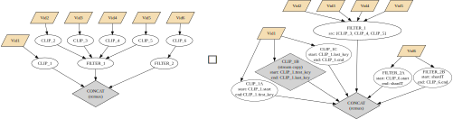
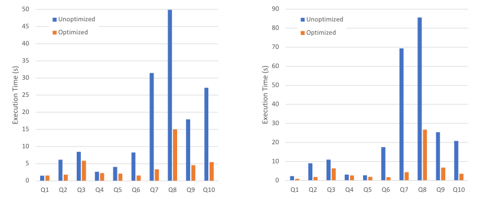

Querying video data has become increasingly popular and useful. Video queries can be complex, ranging from retrieval tasks ("find me the top videos that have..."), to analytics ("how many videos contained object X per day?"), to excerpting tasks ("highlight and zoom into scenes with object X near object Y"), or combinations thereof.
Results for video queries are still typically shown as either relational data or a primitive collection of clickable thumbnails on a web page. Presenting query results in this form is an impedance mismatch with the video medium: they are cumbersome to skim through and are in a different modality and information density compared to the source data. We describe V2V, a system to efficiently synthesize video results for video queries. V2V returns a fully-edited video, allowing the user to consume results in the same manner as the source videos.
A key challenge is that synthesizing video results from a collection of videos is computationally intensive, especially within interactive query response times. To address this, V2V features a grammar to express video transformations in a declarative manner and a heuristic optimizer that improves the efficiency of V2V processing in a manner similar to how databases execute relational queries. Experiments show that our V2V optimizer enables video synthesis to run 3× faster.
To return a video result for a video query, V2V creates a declarative specification from a relational query:
Spec = <TimeDomain, Render,
videos: {"vid1": "video1.mp4", ...},
data_arrays: {"vid1_bb": "annot1.json"}>
TimeDomain = Range(0, 600, 1/30) // The output video is 10 minutes at 30FPS
Render(t) = match t {
t in Range(0, 300, 1/30) => vid1[t], // Take first 5 minutes from vid1
t in Range(300, 600, 1/30) => // Compose vid1-vid4 in a grid with other effects
Grid(
vid1[t + 13463/30],
Overlay(vid2[t], "overlay.png"),
Zoom(vid3[t], 10.0),
vid4[t + 9952/30]
)}Data can also be included in the spesification by referencing data arrays. For example, to draw bounding boxes on a video:
Render(t) = BoundingBox(vid1[t], vid1_bb[t])V2V features an optimizer that improves the efficiency of video synthesis. It uses database-style optimization techniques, optimizing specs the same way a database optimizer optimizes SQL queries. When possible, V2V tries to reduce operations to stream copies, which do not require decoding and encoding.
Our optimizer improves the efficiency of V2V processing by 3× on average.
@inproceedings{winecki2024_v2v,
title = {V2V: Efficiently Synthesizing Video Results for Video Queries},
author = {Winecki, Dominik and Nandi, Arnab},
year = 2024,
booktitle = {2024 IEEE 40th International Conference on Data Engineering (ICDE)}
}